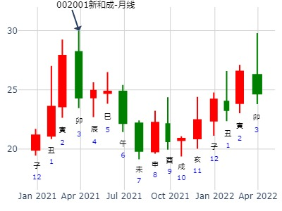
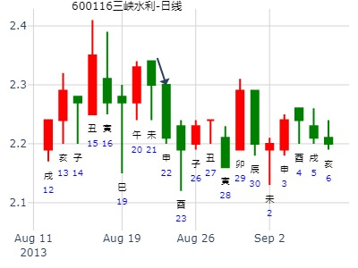
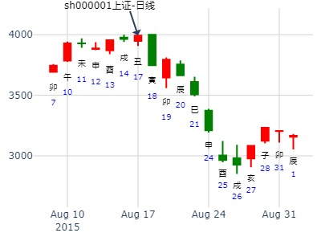

出生年：19**年 性别：男 占事: 占600896中海海盛1月25日-29日走势
起卦方式：手动摇卦
公历时间：2010年1月23日12时1分
干支：己丑年 丁丑月 癸酉日 戊午时
旬空：午未 申酉 戌亥 子丑
离宫：天火同人（归魂） 乾宫：乾为天（六冲）
白虎 ▄▄▄▄▄ 子孙壬戌土 应 ▄▄▄▄▄ 子孙壬戌土 世
螣蛇 ▄▄▄▄▄ 妻财壬申金 ▄▄▄▄▄ 妻财壬申金
勾陈 ▄▄▄▄▄ 兄弟壬午火 ▄▄▄▄▄ 兄弟壬午火
朱雀 ▄▄▄▄▄ 官鬼己亥水 世 ▄▄▄▄▄ 子孙甲辰土 应
青龙 ▄▄ ▄▄ 子孙己丑土 X-> ▄▄▄▄▄ 父母甲寅木
玄武 ▄▄▄▄▄ 父母己卯木 ▄▄▄▄▄ 官鬼甲子水
周一，二，大涨，3，4，5震荡小涨。
占事：601118海南橡胶年前大涨吗
排卦：元亨利贞网六爻在线排盘系统 http://www.china95.net
公历起卦时间：2014年1月14日16时1分 (电脑自动)
干支：癸巳年 乙丑月 乙酉日 甲申时 （日空：午未）
离宫：天火同人 (归魂) 乾宫：乾为天 (六冲)
玄武 子孙壬戌土 ▅▅▅▅▅ 应 子孙壬戌土 ▅▅▅▅▅ 世
白虎 妻财壬申金 ▅▅▅▅▅ 妻财壬申金 ▅▅▅▅▅
腾蛇 兄弟壬午火 ▅▅▅▅▅ 兄弟壬午火 ▅▅▅▅▅
勾陈 官鬼己亥水 ▅▅▅▅▅ 世 子孙甲辰土 ▅▅▅▅▅ 应
朱雀 子孙己丑土 ▅▅ ▅▅ ╳→ 父母甲寅木 ▅▅▅▅▅
青龙 父母己卯木 ▅▅▅▅▅ 官鬼甲子水 ▅▅▅▅▅
丑月子孙当值，寅木被日克无力。涨为主。
出生：2021 年 性别：男 占事：
试测上证2021.2.3收盘百位数是几？wusai youraoshen -
排卦：元亨利贞网六爻在线排盘系统 https://www.china95.net
公历起卦时间：2021年1月16日16时9分 (电脑自动)
干支：庚子年 己丑月 甲子日 壬申时 （日空：戌亥）
离宫：天火同人 (归魂) 乾宫：乾为天 (六冲)
玄武 子孙壬戌土 ▅▅▅▅▅ 应 子孙壬戌土 ▅▅▅▅▅ 世
白虎 妻财壬申金 ▅▅▅▅▅ 妻财壬申金 ▅▅▅▅▅
螣蛇 兄弟壬午火 ▅▅▅▅▅ 兄弟壬午火 ▅▅▅▅▅
勾陈 官鬼己亥水 ▅▅▅▅▅ 世 子孙甲辰土 ▅▅▅▅▅ 应
朱雀 子孙己丑土 ▅▅ ▅▅ ╳→ 父母甲寅木 ▅▅▅▅▅
青龙 父母己卯木 ▅▅▅▅▅ 官鬼甲子水 ▅▅▅▅▅
主帖标题: 2011年2月21-25日大盘走势
起卦方式：报数起卦 (9,11) 动爻加时辰
公历时间：2011年2月24日10时4分 干支：辛卯年 庚寅月 庚戌日 辛巳时
旬空：午未 午未 寅卯 申酉
离宫：天火同人（归魂） 乾宫：乾为天（六冲）
螣蛇 ▄▄▄▄▄ 子孙壬戌土 应 ▄▄▄▄▄ 子孙壬戌土 世
勾陈 ▄▄▄▄▄ 妻财壬申金 ▄▄▄▄▄ 妻财壬申金
朱雀 ▄▄▄▄▄ 兄弟壬午火 ▄▄▄▄▄ 兄弟壬午火
青龙 ▄▄▄▄▄ 官鬼己亥水 世 ▄▄▄▄▄ 子孙甲辰土 应
玄武 ▄▄ ▄▄ 子孙己丑土 X-> ▄▄▄▄▄ 父母甲寅木
白虎 ▄▄▄▄▄ 父母己卯木 ▄▄▄▄▄ 官鬼甲子水
日卦还是升的
主帖标题: 22日-26日
求测人：某人，女，辛亥(1971年)，电脑摇卦(起卦方式)
占问事宜：黄金后期趋势600988
公历：2016年2月19日12时8分，星期五。
干支：丙申年 庚寅月 辛未日 甲午时 (卦身：申)
主变卦 天火同人(离宫-归魂) 之 乾为天(乾宫) [空亡:戌、亥]
螣蛇 ▅▅▅▅▅ 子孙壬戌土 应 ▅▅▅▅▅ 子孙壬戌土 世
勾陈 ▅▅▅▅▅ 妻财壬申金 ▅▅▅▅▅ 妻财壬申金
朱雀 ▅▅▅▅▅ 兄弟壬午火 ▅▅▅▅▅ 兄弟壬午火
青龙 ▅▅▅▅▅ 官鬼己亥水 世 ▅▅▅▅▅ 子孙甲辰土 应
玄武 ▅▅ ▅▅×子孙己丑土 ▅▅▅▅▅ 父母甲寅木
白虎 ▅▅▅▅▅ 父母己卯木 ▅▅▅▅▅ 官鬼甲子水
出生：2021 年 性别：男 占事：试测上证2.1庚辰一-2.3哪日底？
排卦：元亨利贞网六爻在线排盘系统 https://www.china95.net
公历起卦时间：2021年2月1日13时15分 (电脑自动)
干支：庚子年 己丑月 庚辰日 癸未时 （日空：申酉）
神煞：驿马－寅 桃花－酉 日禄－申 贵人－丑，未
离宫：天火同人 (归魂) 乾宫：乾为天 (六冲)
六神 伏神 本 卦 变 卦
螣蛇 子孙壬戌土 ▅▅▅▅▅ 应 子孙壬戌土 ▅▅▅▅▅ 世
勾陈 妻财壬申金 ▅▅▅▅▅ 妻财壬申金 ▅▅▅▅▅
朱雀 兄弟壬午火 ▅▅▅▅▅ 兄弟壬午火 ▅▅▅▅▅
青龙 官鬼己亥水 ▅▅▅▅▅ 世 子孙甲辰土 ▅▅▅▅▅ 应
玄武 子孙己丑土 ▅▅ ▅▅ ╳→ 父母甲寅木 ▅▅▅▅▅
白虎 父母己卯木 ▅▅▅▅▅ 官鬼甲子水 ▅▅▅▅▅
主帖标题: 手摇 创业板2月7日-11日周挂
公历：2022年2月4日18时43分，星期五。
干支：壬寅年 壬寅月 戊子日 辛酉时 (卦身：申)
主变卦 天火同人(离宫-归魂) 之 乾为天(乾宫) [空亡:午、未]
朱雀 ▅▅▅▅▅ 子孙壬戌土 应 ▅▅▅▅▅ 子孙壬戌土 世
青龙 ▅▅▅▅▅ 妻财壬申金 ▅▅▅▅▅ 妻财壬申金
玄武 ▅▅▅▅▅ 兄弟壬午火 ▅▅▅▅▅ 兄弟壬午火
白虎 ▅▅▅▅▅ 官鬼己亥水 世 ▅▅▅▅▅ 子孙甲辰土 应
螣蛇 ▅▅ ▅▅×子孙己丑土 ▅▅▅▅▅ 父母甲寅木
勾陈 ▅▅▅▅▅ 父母己卯木 ▅▅▅▅▅ 官鬼甲子水
上证指数到下周末-风生水起 手工
时间: 2025-02-26 12时41分
干支: 乙巳年戊寅月丙寅日甲午时 (旬空: 戌亥 )
天火同人(归魂) 乾为天
六神 伏神 本 卦 变 卦
青龙 ▅▅▅▅▅ 子孙戌土 应 ▅▅▅▅▅ 子孙戌土 世
玄武 ▅▅▅▅▅ 妻财申金 ▅▅▅▅▅ 妻财申金
白虎 ▅▅▅▅▅ 兄弟午火 ▅▅▅▅▅ 兄弟午火
腾蛇 ▅▅▅▅▅ 官鬼亥水 世 ▅▅▅▅▅ 子孙辰土 应
勾陈 ▅▅ ▅▅ 子孙丑土 Ｘ→ ▅▅▅▅▅ 父母寅木
朱雀 ▅▅▅▅▅ 父母卯木 ▅▅▅▅▅ 官鬼子水
太准确了，当天没跌，还以为卦失灵。
结果卯日跌，收了下影线后，但辰日是大跌，难怪父母爻这么旺来克子孙，川普加税打击。还有上周证监会打击概念股炒作利空。
主帖标题: [大盘指数] 预测股市大盘未来趋势综合贴！
转贴一个卦:性别：女
占事：沪市大盘股指半年涨跌情况如何？
公历起卦时间：2008年3月12日21时41分 (电脑自动)
干支: 戊子年乙卯月辛亥日 (旬空: 寅卯 )
天火同人(归魂) 乾为天
六神 伏神 本 卦 变 卦
腾蛇 ▅▅▅▅▅ 子孙戌土 应 ▅▅▅▅▅ 子孙戌土 世
勾陈 ▅▅▅▅▅ 妻财申金 ▅▅▅▅▅ 妻财申金
朱雀 ▅▅▅▅▅ 兄弟午火 ▅▅▅▅▅ 兄弟午火
青龙 ▅▅▅▅▅ 官鬼亥水 世 ▅▅▅▅▅ 子孙辰土 应
玄武 ▅▅ ▅▅ 子孙丑土 Ｘ→ ▅▅▅▅▅ 父母寅木
白虎 ▅▅▅▅▅ 父母卯木 ▅▅▅▅▅ 官鬼子水
作者: 冰山 时间: 2011-3-4 13:19 标题: 600783鲁信高新趋势预测
起卦方式：铜钱摇卦
占问事宜：600783鲁信高新趋势41.82元
起卦公历：2011年3月4日13时14分(北京时间)。
干支： 辛卯年 庚寅月 戊午日 己未时
天火同人 天风姤 乾为天
【主卦】 【互卦】 【变卦】
▅▅▅▅▅ ▅▅▅▅▅ ▅▅▅▅▅
▅▅▅▅▅ ▅▅▅▅▅ ▅▅▅▅▅
▅▅▅▅▅ ▅▅▅▅▅ ▅▅▅▅▅
▅▅▅▅▅ ▅▅▅▅▅ ▅▅▅▅▅
▅▅ ▅▅× ▅▅▅▅▅ ▅▅▅▅▅
▅▅▅▅▅ ▅▅ ▅▅ ▅▅▅▅▅
干支：辛卯年 庚寅月 戊午日 己未时 （日空：子丑）
离宫：天火同人 (归魂) 乾宫：乾为天 (六冲)
朱雀 子孙壬戌土 ▅▅▅▅▅ 应 子孙壬戌土 ▅▅▅▅▅ 世
青龙 妻财壬申金 ▅▅▅▅▅ 妻财壬申金 ▅▅▅▅▅
玄武 兄弟壬午火 ▅▅▅▅▅ 兄弟壬午火 ▅▅▅▅▅
白虎 官鬼己亥水 ▅▅▅▅▅ 世 子孙甲辰土 ▅▅▅▅▅ 应
腾蛇 子孙己丑土 ▅▅ ▅▅ ╳→ 父母甲寅木 ▅▅▅▅▅
勾陈 父母己卯木 ▅▅▅▅▅ 官鬼甲子水 ▅▅▅▅▅
申日大部分为涨。因为财爻月破，当月为破，出月则不破。
出月后的第一个申日大涨。24日寅本是跌，却因动态申空被冲实，而涨。
实际横盘N久。
600549现价买可否赚钱
时间: 2015-03-31 10时56分
干支: 乙未年己卯月丙午日 (旬空: 寅卯 )
天火同人(归魂) 乾为天
六神 伏神 本 卦 变 卦
青龙 ▅▅▅▅▅ 子孙戌土 应 ▅▅▅▅▅ 子孙戌土 世
玄武 ▅▅▅▅▅ 妻财申金 ▅▅▅▅▅ 妻财申金
白虎 ▅▅▅▅▅ 兄弟午火 ▅▅▅▅▅ 兄弟午火
腾蛇 ▅▅▅▅▅ 官鬼亥水 世 ▅▅▅▅▅ 子孙辰土 应
勾陈 ▅▅ ▅▅ 子孙丑土 Ｘ→ ▅▅▅▅▅ 父母寅木
朱雀 ▅▅▅▅▅ 父母卯木 ▅▅▅▅▅ 官鬼子水
寅日冲申财暗动，涨。
卯则助父母寅木克子孙丑土大跌。
本帖最后由 再人 于 2019-3-17 19:43 编辑
上证指数3月18-22日行情预测？[六爻预测][原创] 再人
起卦时间：2019年3月16日9时29分 起卦方式：手摇铜钱起卦
干支：己亥年 丁卯月 壬子日 乙巳时 （日空：寅卯）
离宫：天火同人 (归魂) 乾宫：乾为天 (六冲)
六神 伏神 本 卦 变 卦
白虎 子孙壬戌土 ▅▅▅▅▅ 应 子孙壬戌土 ▅▅▅▅▅ 世
腾蛇 妻财壬申金 ▅▅▅▅▅ 妻财壬申金 ▅▅▅▅▅
勾陈 兄弟壬午火 ▅▅▅▅▅ 兄弟壬午火 ▅▅▅▅▅
朱雀 官鬼己亥水 ▅▅▅▅▅ 世 子孙甲辰土 ▅▅▅▅▅ 应
青龙 子孙己丑土 ▅▅ ▅▅ ╳→ 父母甲寅木 ▅▅▅▅▅
玄武 父母己卯木 ▅▅▅▅▅ 官鬼甲子水 ▅▅▅▅▅
断：全周为高位震荡，略跌行情（官鬼亥水持世，值临太岁日建，旺相，有生克权，行情还能有所表现。子孙丑土独动生财，行情看涨；但嫌动而化空、动化回头克，且被日建合住，多方力量被限制住，故此不涨反跌）。
其中：18日周一甲寅日跌；
主帖标题: 转发“个股卦例及反馈”
占事：002001新和成至年底如何走？
排卦：元亨利贞网六爻在线排盘系统 https://www.china95.net
公历起卦时间：2021年3月14日9时18分 (电脑自动)
干支：辛丑年 辛卯月 辛酉日 癸巳时 （日空：子丑）
离宫：天火同人 (归魂) 乾宫：乾为天 (六冲)
六神 伏神 本 卦 变 卦
螣蛇 子孙壬戌土 ▅▅▅▅▅ 应 子孙壬戌土 ▅▅▅▅▅ 世
勾陈 妻财壬申金 ▅▅▅▅▅ 妻财壬申金 ▅▅▅▅▅
朱雀 兄弟壬午火 ▅▅▅▅▅ 兄弟壬午火 ▅▅▅▅▅
青龙 官鬼己亥水 ▅▅▅▅▅ 世 子孙甲辰土 ▅▅▅▅▅ 应
玄武 子孙己丑土 ▅▅ ▅▅ ╳→ 父母甲寅木 ▅▅▅▅▅
白虎 父母己卯木 ▅▅▅▅▅ 官鬼甲子水 ▅▅▅▅▅

主帖标题: [原创]每日预测深沪两市大盘方向
公历时间：2008年4月18日9时30分 星期五
干支：戊子年 丙辰月 戊子日 丁巳时 (旬空：午未)
神煞：驿马—寅 桃花—酉 日禄—巳 贵人—丑，未
离宫：天火同人（归魂） 乾宫：乾为天（六冲）
朱雀 ▅▅▅▅▅ 子孙壬戌土 应 ▅▅▅▅▅ 子孙壬戌土 世
青龙 ▅▅▅▅▅ 妻财壬申金 ▅▅▅▅▅ 妻财壬申金
玄武 ▅▅▅▅▅ 兄弟壬午火 ▅▅▅▅▅ 兄弟壬午火
白虎 ▅▅▅▅▅ 官鬼己亥水 世 ▅▅▅▅▅ 子孙甲辰土 应
螣蛇 ▅▅ ▅▅ 子孙己丑土 ×→ ▅▅▅▅▅ 父母甲寅木
勾陈 ▅▅▅▅▅ 父母己卯木 ▅▅▅▅▅ 官鬼甲子水
分析:归魂化六冲:回归化涣散.天火同人为集结人心,火光冲天,迎合大势,互式天风姤为盛阳遇阴,遭遇空头,先升后跌,化乾为刚健有力之象. 多化消息仇神:多头化回头克,财源枯竭,多方受克人气难举,必折本,建议:休息.属于个人观点!
主帖标题: 002400省广集团00***0能不能上15？
公历：2020年4月21日22时51分，星期二。
干支：庚子年 庚辰月 甲午日 乙亥时 (卦身：申)
主变卦 天火同人(离宫-归魂) 之 乾为天(乾宫) [空亡:辰、巳]
玄武 ▅▅▅▅▅ 子孙壬戌土 应 ▅▅▅▅▅ 子孙壬戌土 世
白虎 ▅▅▅▅▅ 妻财壬申金 ▅▅▅▅▅ 妻财壬申金
螣蛇 ▅▅▅▅▅ 兄弟壬午火 ▅▅▅▅▅ 兄弟壬午火
勾陈 ▅▅▅▅▅ 官鬼己亥水 世 ▅▅▅▅▅ 子孙甲辰土 应
朱雀 ▅▅ ▅▅×子孙己丑土 ▅▅▅▅▅ 父母甲寅木
青龙 ▅▅▅▅▅ 父母己卯木 ▅▅▅▅▅ 官鬼甲子水
主帖标题: 002400省广集团能不能上15？
http://bbs.64gua.com/forum.phpmod=viewthread&tid=7984024
公历：2020年4月21日22时51分，星期二。
干支：庚子年 庚辰月 甲午日 乙亥时 (卦身：申)
主变卦 天火同人(离宫-归魂) 之 乾为天(乾宫) [空亡:辰、巳]
玄武 ▅▅▅▅▅ 子孙壬戌土 应 ▅▅▅▅▅ 子孙壬戌土 世
白虎 ▅▅▅▅▅ 妻财壬申金 ▅▅▅▅▅ 妻财壬申金
螣蛇 ▅▅▅▅▅ 兄弟壬午火 ▅▅▅▅▅ 兄弟壬午火
勾陈 ▅▅▅▅▅ 官鬼己亥水 世 ▅▅▅▅▅ 子孙甲辰土 应
朱雀 ▅▅ ▅▅×子孙己丑土 ▅▅▅▅▅ 父母甲寅木
青龙 ▅▅▅▅▅ 父母己卯木 ▅▅▅▅▅ 官鬼甲子水
男 占事：4.12上证收盘走势？
公历起卦时间：2021年4月11日9时8分 (电脑自动)
干支：辛丑年 壬辰月 己丑日 己巳时 （日空：午未）
离宫：天火同人 (归魂) 乾宫：乾为天 (六冲)
六神 伏神 本 卦 变 卦
勾陈 子孙壬戌土 ▅▅▅▅▅ 应 子孙壬戌土 ▅▅▅▅▅ 世
朱雀 妻财壬申金 ▅▅▅▅▅ 妻财壬申金 ▅▅▅▅▅
青龙 兄弟壬午火 ▅▅▅▅▅ 兄弟壬午火 ▅▅▅▅▅
玄武 官鬼己亥水 ▅▅▅▅▅ 世 子孙甲辰土 ▅▅▅▅▅ 应
白虎 子孙己丑土 ▅▅ ▅▅ ╳→ 父母甲寅木 ▅▅▅▅▅
螣蛇 父母己卯木 ▅▅▅▅▅ 官鬼甲子水 ▅▅▅▅▅
主帖标题: 4月19至4月23日[数理卦]
公历起卦时间：2021年4月17日18时30分 (手工指定)
干支：辛丑年 壬辰月 乙未日 乙酉时 （日空：辰巳）
神煞：驿马－巳 桃花－子 日禄－卯 贵人－子，申
离宫：天火同人 (归魂) 乾宫：乾为天 (六冲)
六神 伏神 本 卦 变 卦
玄武 子孙壬戌土 ▅▅▅▅▅ 应 子孙壬戌土 ▅▅▅▅▅ 世
白虎 妻财壬申金 ▅▅▅▅▅ 妻财壬申金 ▅▅▅▅▅
螣蛇 兄弟壬午火 ▅▅▅▅▅ 兄弟壬午火 ▅▅▅▅▅
勾陈 官鬼己亥水 ▅▅▅▅▅ 世 子孙甲辰土 ▅▅▅▅▅ 应
朱雀 子孙己丑土 ▅▅ ▅▅ ╳→ 父母甲寅木 ▅▅▅▅▅
青龙 父母己卯木 ▅▅▅▅▅ 官鬼甲子水 ▅▅▅▅▅
主帖标题: [09己丑岁个股跟踪预测实践]
601628中国人寿与上日收盘对比涨跌！开市每天更新！
占事: 5月18日癸亥日601628中国人寿与上日收盘对比涨跌！ 手动摇卦
公历时间：2009年5月17日10时10分
干支：己丑年 己巳月 壬戌日 乙巳时 旬空：午未 戌亥 子丑 寅卯
离宫：天火同人（归魂） 乾宫：乾为天（六冲）
白虎 ▄▄▄▄▄ 子孙壬戌土 应 ▄▄▄▄▄ 子孙壬戌土 世
螣蛇 ▄▄▄▄▄ 妻财壬申金 ▄▄▄▄▄ 妻财壬申金
勾陈 ▄▄▄▄▄ 兄弟壬午火 ▄▄▄▄▄ 兄弟壬午火
朱雀 ▄▄▄▄▄ 官鬼己亥水 世 ▄▄▄▄▄ 子孙甲辰土 应
青龙 ▄▄ ▄▄ 子孙己丑土 X-> ▄▄▄▄▄ 父母甲寅木
玄武 ▄▄▄▄▄ 父母己卯木 ▄▄▄▄▄ 官鬼甲子水
应克世！子空！低开，震荡，跌2.2%以下！
出生：没填 年 性别：男 占事：000066长城电脑明天涨跌
排卦：元亨利贞网六爻在线排盘系统 http://www.china95.net
公历起卦时间：2016年5月16日15时56分 (电脑自动)
干支：丙申年 癸巳月 戊戌日 庚申时 （日空：辰巳）
离宫：天火同人 (归魂) 乾宫：乾为天 (六冲)
六神 伏神 本 卦 变 卦
朱雀 子孙壬戌土 ▅▅▅▅▅ 应 子孙壬戌土 ▅▅▅▅▅ 世
青龙 妻财壬申金 ▅▅▅▅▅ 妻财壬申金 ▅▅▅▅▅
玄武 兄弟壬午火 ▅▅▅▅▅ 兄弟壬午火 ▅▅▅▅▅
白虎 官鬼己亥水 ▅▅▅▅▅ 世 子孙甲辰土 ▅▅▅▅▅ 应
腾蛇 子孙己丑土 ▅▅ ▅▅ ╳→ 父母甲寅木 ▅▅▅▅▅
勾陈 父母己卯木 ▅▅▅▅▅ 官鬼甲子水 ▅▅▅▅▅

明天高抛中水渔业进湖北金环怎样。占事：000615湖北金环明天涨跌
公历起卦时间：2016年5月25日17时51分 (电脑自动)
时间: 2016-05-25
干支: 丙申年癸巳月丁未日 (旬空: 寅卯 )
天火同人(归魂) 乾为天
六神 伏神 本 卦 变 卦
青龙 ▅▅▅▅▅ 子孙戌土 应 ▅▅▅▅▅ 子孙戌土 世
玄武 ▅▅▅▅▅ 妻财申金 ▅▅▅▅▅ 妻财申金
白虎 ▅▅▅▅▅ 兄弟午火 ▅▅▅▅▅ 兄弟午火
腾蛇 ▅▅▅▅▅ 官鬼亥水 世 ▅▅▅▅▅ 子孙辰土 应
勾陈 ▅▅ ▅▅ 子孙丑土 Ｘ→ ▅▅▅▅▅ 父母寅木
朱雀 ▅▅▅▅▅ 父母卯木 ▅▅▅▅▅ 官鬼子水

主帖标题: 三个臭皮匠,合凑成一个诸葛亮
主题：沪指下周 价量卦
壬寅 乙巳 丙寅 丙申 (戌亥空) 壬寅年三月十三(2022/05/13 15:02:39)
天火同人 乾为天
青龙 子孙戌土 ／ 应 子孙戌土 ／ 世
玄武 妻财壬申 ／ 妻财壬申 ／
白虎 兄弟午火 ／ 兄弟午火 ／
腾蛇 官鬼亥水 ／ 世 子孙辰土 ／ 应
勾陈 子孙丑土 × 父母甲寅 ／
朱雀 父母卯木 ／ 官鬼子水 ／
主题：沪指下周 co卦
壬寅 乙巳 丙寅 丙申 (戌亥空) 壬寅年三月十三(2022/05/13 15:02:39)
天雷无妄 天泽履
青龙 妻财戌土 ／ 妻财戌土 ／
玄武 官鬼壬申 ／ 官鬼壬申 ／ 世
白虎 子孙午火 ／ 世 子孙午火 ／
腾蛇 妻财辰土 ∥ 妻财丑土 ∥
勾陈 兄弟寅木 × 兄弟卯木 ／ 应
朱雀 父母子水 ／ 应 子孙巳火 ／
主题：沪指下周 oc卦
壬寅 乙巳 丙寅 丙申 (戌亥空) 壬寅年三月十三(2022/05/13 15:02:39)
雷天大壮 雷泽归妹
青龙 兄弟戌土 ∥ 兄弟戌土 ∥ 应
玄武 子孙申金 ∥ 子孙申金 ∥
白虎 父母庚午 ／ 世 父母庚午 ／
腾蛇 兄弟辰土 ○ 兄弟丑土 ∥ 世
勾陈 官鬼甲寅 ／ 官鬼卯木 ／
朱雀 妻财子水 ／ 应 父母巳火 ／
主题：沪指下周 cc卦
壬寅 乙巳 丙寅 丙申 (戌亥空) 壬寅年三月十三(2022/05/13 15:02:39)
水天需 水风井
青龙 妻财子水 ∥ 妻财子水 ∥
玄武 兄弟戌土 ／ 兄弟戌土 ／ 世
白虎 子孙戊申 ∥ 世 子孙戊申 ∥
腾蛇 兄弟辰土 ／ 子孙酉金 ／
父母乙巳：勾陈 官鬼甲寅 ／ 妻财亥水 ／ 应
朱雀 妻财子水 ○ 应 兄弟丑土 ∥
编了30多个数理卦,竟然无一中用. （注意，仅供参考）

主帖标题: 六爻预测14日大盘行情
公历起卦时间：2011年6月14日9时30分 (手工指定)
干支：辛卯年 甲午月 庚子日 辛巳时 （日空：辰巳）
神煞：驿马－寅 桃花－酉 日禄－申 贵人－丑，未
离宫：天火同人 (归魂) 乾宫：乾为天 (六冲)
腾蛇 子孙壬戌土 ▅▅▅▅▅ 应 子孙壬戌土 ▅▅▅▅▅ 世
勾陈 妻财壬申金 ▅▅▅▅▅ 妻财壬申金 ▅▅▅▅▅
朱雀 兄弟壬午火 ▅▅▅▅▅ 兄弟壬午火 ▅▅▅▅▅
青龙 官鬼己亥水 ▅▅▅▅▅ 世 子孙甲辰土 ▅▅▅▅▅ 应
玄武 子孙己丑土 ▅▅ ▅▅ ╳→ 父母甲寅木 ▅▅▅▅▅
白虎 父母己卯木 ▅▅▅▅▅ 官鬼甲子水 ▅▅▅▅▅
子冲午暗动，连环生，涨。
主帖标题: 占个短线股，请大家看看，急急急
婚否：已婚 出生年:1981
性别：女 占事：占002130此股今明两天的走势 起卦方式：手动摇卦
公历时间：2015年6月9日10时20分
干支：乙未年 壬午月 丙辰日 癸巳时 旬空：辰巳 申酉 子丑 午未
离宫：天火同人（归魂） 乾宫：乾为天（六冲）
青龙 ▄▄▄▄▄ 子孙壬戌土 应 ▄▄▄▄▄ 子孙壬戌土 世
玄武 ▄▄▄▄▄ 妻财壬申金 ▄▄▄▄▄ 妻财壬申金
白虎 ▄▄▄▄▄ 兄弟壬午火 ▄▄▄▄▄ 兄弟壬午火
螣蛇 ▄▄▄▄▄ 官鬼己亥水 世 ▄▄▄▄▄ 子孙甲辰土 应
勾陈 ▄▄ ▄▄ 子孙己丑土 × ▄▄▄▄▄ 父母甲寅木
朱雀 ▄▄▄▄▄ 父母己卯木 ▄▄▄▄▄ 官鬼甲子水
辰日大涨，巳日冲破世爻呼？
航天长峰6.2丙子星期二-6.5哪日顶？
出生：2020 年 性别：男 占事：没填
排卦：元亨利贞网六爻在线排盘系统 https://www.suan98.com
公历起卦时间：2020年6月2日15时12分 (电脑自动)
干支：庚子年 辛巳月 丙子日 丙申时 （日空：申酉）
离宫：天火同人 (归魂) 乾宫：乾为天 (六冲)
青龙 子孙壬戌土 ▅▅▅▅▅ 应 子孙壬戌土 ▅▅▅▅▅ 世
玄武 妻财壬申金 ▅▅▅▅▅ 妻财壬申金 ▅▅▅▅▅
白虎 兄弟壬午火 ▅▅▅▅▅ 兄弟壬午火 ▅▅▅▅▅
螣蛇 官鬼己亥水 ▅▅▅▅▅ 世 子孙甲辰土 ▅▅▅▅▅ 应
勾陈 子孙己丑土 ▅▅ ▅▅ ╳→ 父母甲寅木 ▅▅▅▅▅
朱雀 父母己卯木 ▅▅▅▅▅ 官鬼甲子水 ▅▅▅▅▅
氯碱化工6.8壬午一至6.12哪日顶？
出生：2020 年 性别：男 占事：没填
公历起卦时间：2020年6月9日13时49分 (电脑自动)
干支：庚子年 壬午月 癸未日 己未时 （日空：申酉）
离宫：天火同人 (归魂) 乾宫：乾为天 (六冲)
白虎 子孙壬戌土 ▅▅▅▅▅ 应 子孙壬戌土 ▅▅▅▅▅ 世
螣蛇 妻财壬申金 ▅▅▅▅▅ 妻财壬申金 ▅▅▅▅▅
勾陈 兄弟壬午火 ▅▅▅▅▅ 兄弟壬午火 ▅▅▅▅▅
朱雀 官鬼己亥水 ▅▅▅▅▅ 世 子孙甲辰土 ▅▅▅▅▅ 应
青龙 子孙己丑土 ▅▅ ▅▅ ╳→ 父母甲寅木 ▅▅▅▅▅
玄武 父母己卯木 ▅▅▅▅▅ 官鬼甲子水 ▅▅▅▅▅
未日冲飞子孙，跌。旬末摇卦，申酉刚出空，还无力？
4个大盘卦：627周卦，随之震，同人之乾，节之震，中孚之泰，.md
大盘3607。56下周走势
时间: 2021-06-27 13时27分
干支: 辛丑年甲午月丙午日 (旬空: 寅卯 )
天火同人(归魂) 乾为天
六神 伏神 本 卦 变 卦
青龙 ▅▅▅▅▅ 子孙戌土 应 ▅▅▅▅▅ 子孙戌土 世
玄武 ▅▅▅▅▅ 妻财申金 ▅▅▅▅▅ 妻财申金
白虎 ▅▅▅▅▅ 兄弟午火 ▅▅▅▅▅ 兄弟午火
腾蛇 ▅▅▅▅▅ 官鬼亥水 世 ▅▅▅▅▅ 子孙辰土 应
勾陈 ▅▅ ▅▅ 子孙丑土 Ｘ→ ▅▅▅▅▅ 父母寅木
朱雀 ▅▅▅▅▅ 父母卯木 ▅▅▅▅▅ 官鬼子水
同类参考卦：注意，己分别处理四个卦。
上证指数未来二周走势如何？--天同--
时间: 2021-06-27 14时49分
干支: 辛丑年甲午月丙午日 (旬空: 寅卯 )
泽雷随(归魂) 震为雷
六神 伏神 本 卦 变 卦
青龙 ▅▅ ▅▅ 妻财未土 应 ▅▅ ▅▅ 妻财戌土 世
玄武 ▅▅▅▅▅ 官鬼酉金 Ｏ→ ▅▅ ▅▅ 官鬼申金
白虎 子孙午火▅▅▅▅▅ 父母亥水 ▅▅▅▅▅ 子孙午火
腾蛇 ▅▅ ▅▅ 妻财辰土 世 ▅▅ ▅▅ 妻财辰土 应
勾陈 ▅▅ ▅▅ 兄弟寅木 ▅▅ ▅▅ 兄弟寅木
朱雀 ▅▅▅▅▅ 父母子水 ▅▅▅▅▅ 父母子水
上证指数未来二周
时间: 2021-06-26 7时50分
干支: 辛丑年甲午月乙巳日 (旬空: 寅卯 )
水泽节 震为雷
六神 伏神 本 卦 变 卦
玄武 ▅▅ ▅▅ 兄弟子水 ▅▅ ▅▅ 官鬼戌土 世
白虎 ▅▅▅▅▅ 官鬼戌土 Ｏ→ ▅▅ ▅▅ 父母申金
腾蛇 ▅▅ ▅▅ 父母申金 应Ｘ→ ▅▅▅▅▅ 妻财午火
勾陈 ▅▅ ▅▅ 官鬼丑土 ▅▅ ▅▅ 官鬼辰土 应
朱雀 ▅▅▅▅▅ 子孙卯木 Ｏ→ ▅▅ ▅▅ 子孙寅木
青龙 ▅▅▅▅▅ 妻财巳火 世 ▅▅▅▅▅ 兄弟子水
上证628-709日走势
时间: 2021-06-27 14时42分
干支: 辛丑年甲午月丙午日 (旬空: 寅卯 )
风泽中孚(游魂) 地天泰
六神 伏神 本 卦 变 卦
青龙 ▅▅▅▅▅ 官鬼卯木 Ｏ→ ▅▅ ▅▅ 子孙酉金 应
玄武 妻财子水▅▅▅▅▅ 父母巳火 Ｏ→ ▅▅ ▅▅ 妻财亥水
白虎 ▅▅ ▅▅ 兄弟未土 世 ▅▅ ▅▅ 兄弟丑土
腾蛇 子孙申金▅▅ ▅▅ 兄弟丑土 Ｘ→ ▅▅▅▅▅ 兄弟辰土 世
勾陈 ▅▅▅▅▅ 官鬼卯木 ▅▅▅▅▅ 官鬼寅木
朱雀 ▅▅▅▅▅ 父母巳火 应 ▅▅▅▅▅ 妻财子水
天同
 紫气东来
紫气东来
风生水起
中孚之泰
上证6.30收盘相对于5.31收盘走势？
求测人：某人，男，庚午(1990年)，自动起卦(起卦方式)
占问事宜：要问的事情
公历：2022年6月5日6时25分，星期日。
干支：壬寅年 乙巳月 己丑日 丁卯时 (卦身：申)
主变卦 天火同人(离宫-归魂) 之 乾为天(乾宫) [空亡:午、未]
勾陈 ▅▅▅▅▅ 子孙壬戌土 应 ▅▅▅▅▅ 子孙壬戌土 世
朱雀 ▅▅▅▅▅ 妻财壬申金 ▅▅▅▅▅ 妻财壬申金
青龙 ▅▅▅▅▅ 兄弟壬午火 ▅▅▅▅▅ 兄弟壬午火
玄武 ▅▅▅▅▅ 官鬼己亥水 世 ▅▅▅▅▅ 子孙甲辰土 应
白虎 ▅▅ ▅▅×子孙己丑土 ▅▅▅▅▅ 父母甲寅木
螣蛇 ▅▅▅▅▅ 父母己卯木 ▅▅▅▅▅ 官鬼甲子水
j
主帖标题: [股市大赛]每日个股，中国人寿17日
干支：戊子年 己未月 丁巳日 丙午时 旬空：午未 子丑 子丑 寅卯
离宫：天火同人（归魂） 乾宫：乾为天（六冲）
青龙 ▄▄▄▄▄ 子孙壬戌土 应 ▄▄▄▄▄ 子孙壬戌土 世
玄武 ▄▄▄▄▄ 妻财壬申金 ▄▄▄▄▄ 妻财壬申金
白虎 ▄▄▄▄▄ 兄弟壬午火 ▄▄▄▄▄ 兄弟壬午火
螣蛇 ▄▄▄▄▄ 官鬼己亥水 世 ▄▄▄▄▄ 子孙甲辰土 应
勾陈 ▄▄ ▄▄ 子孙己丑土 X-> ▄▄▄▄▄ 父母甲寅木
朱雀 ▄▄▄▄▄ 父母己卯木 ▄▄▄▄▄ 官鬼甲子水
孙反冲孙，涨。
主帖标题: [原创]7月21日股市上海大盘预测大赛一次性预测五天涨跌
起卦方式：手动摇卦 www.iqing.net 线上排盘系统
公历时间：2008年7月20日14时20分 星期日
干支：戊子年 己未月 辛酉日 乙未时 (旬空：子丑)
神煞：驿马—亥 桃花—午 日禄—酉 贵人—寅，午
离宫：天火同人（归魂） 乾宫：乾为天（六冲）
六神 【本 卦】 【变 卦】
螣蛇 ▅▅▅▅▅ 子孙壬戌土 应 ▅▅▅▅▅ 子孙壬戌土 世
勾陈 ▅▅▅▅▅ 妻财壬申金 ▅▅▅▅▅ 妻财壬申金
朱雀 ▅▅▅▅▅ 兄弟壬午火 ▅▅▅▅▅ 兄弟壬午火
青龙 ▅▅▅▅▅ 官鬼己亥水 世 ▅▅▅▅▅ 子孙甲辰土 应
玄武 ▅▅ ▅▅ 子孙己丑土 ×→ ▅▅▅▅▅ 父母甲寅木
白虎 ▅▅▅▅▅ 父母己卯木 ▅▅▅▅▅ 官鬼甲子水
洋河 走势 作者：行者。
公历起卦时间：2014年7月25日15时13分 (在线摇卦)
干支：甲午年 辛未月 丁酉日 戊申时 （日空：辰巳）
离宫：天火同人 (归魂) 乾宫：乾为天 (六冲)
六神 伏神 本 卦 变 卦
青龙 子孙壬戌土 ▅▅▅▅▅ 应 子孙壬戌土 ▅▅▅▅▅ 世
玄武 妻财壬申金 ▅▅▅▅▅ 妻财壬申金 ▅▅▅▅▅
白虎 兄弟壬午火 ▅▅▅▅▅ 兄弟壬午火 ▅▅▅▅▅
腾蛇 官鬼己亥水 ▅▅▅▅▅ 世 子孙甲辰土 ▅▅▅▅▅ 应
勾陈 子孙己丑土 ▅▅ ▅▅ ╳→ 父母甲寅木 ▅▅▅▅▅
朱雀 父母己卯木 ▅▅▅▅▅ 官鬼甲子水 ▅▅▅▅▅
风生水起 占事：中体产业15.7.11-16.7.10
公历时间：2015年7月11日8时19分
干 支：乙未年 癸未月 戊子日 丙辰时
旬 空：辰巳 申酉 (午未) 子丑
离宫：天火同人（归魂） 乾宫：乾为天（六冲）
六神 【本 卦】 【变 卦】
朱雀 ▄▄▄▄▄ 子孙壬戌土 应 ▄▄▄▄▄ 子孙壬戌土 世
青龙 ▄▄▄▄▄ 妻财壬申金 ▄▄▄▄▄ 妻财壬申金
玄武 ▄▄▄▄▄ 兄弟壬午火 ▄▄▄▄▄ 兄弟壬午火
白虎 ▄▄▄▄▄ 官鬼己亥水 世 ▄▄▄▄▄ 子孙甲辰土 应
螣蛇 ▄▄ ▄▄ 子孙己丑土 X-> ▄▄▄▄▄ 父母甲寅木
勾陈 ▄▄▄▄▄ 父母己卯木 ▄▄▄▄▄ 官鬼甲子水
六二：同人于宗，吝。象曰：同人于宗，吝道也。
主帖标题: 三峡水利明天行情走势？
癸巳 庚申 庚申 癸未 (日空:子丑 时空:申酉 四大空亡:金)
癸巳年七月十六(2013/08/22 14:45:17)
天火同人 乾为天
腾蛇 子孙戌土 ／ 应 子孙戌土 ／ 世
勾陈 妻财申金 ／ 妻财申金 ／
朱雀 兄弟午火 ／ 兄弟午火 ／
青龙 官鬼亥水 ／ 世 子孙辰土 ／ 应
玄武 子孙丑土 × 父母寅木 ／
白虎 父母卯木 ／ 官鬼子水 ／
子孙被克，财旺易跌，古人六爻之理已经提示了，还不开悟啊

占事：嘉麟杰甲申月行情
公历起卦时间：2015年8月11日16时52分 (在线摇卦)
干支：乙未年 甲申月 己未日 壬申时 （日空：子丑）
天火同人(归魂) 乾为天
勾陈 ▅▅▅▅▅ 子孙戌土 应 ▅▅▅▅▅ 子孙戌土 世
朱雀 ▅▅▅▅▅ 妻财申金 ▅▅▅▅▅ 妻财申金
青龙 ▅▅▅▅▅ 兄弟午火 ▅▅▅▅▅ 兄弟午火
玄武 ▅▅▅▅▅ 官鬼亥水 世 ▅▅▅▅▅ 子孙辰土 应
白虎 ▅▅ ▅▅ 子孙丑土 Ｘ→ ▅▅▅▅▅ 父母寅木
腾蛇 ▅▅▅▅▅ 父母卯木 ▅▅▅▅▅ 官鬼子水
六二：同人于宗，吝。象曰：同人于宗，吝道也。
8月18日寅日暴跌：应在子化父，虽然有冲申财暗动，但是不管用。
寅日还正逢世爻应爻都逢空时。（申酉在戌亥空时转化为空头了，戌亥空此时是世应皆空）
马后炮：丑土子孙被冲，尽管财旺，却是顶
8月18日上证指数行情预测
时间: 2015-08-17
干支：乙未年 甲申月 乙丑日 丁亥时 （日空：戌亥）
神煞：驿马－亥 桃花－午 日禄－卯 贵人－子，申
离宫：天火同人 (归魂) 乾宫：乾为天 (六冲)
玄武 子孙壬戌土 ▅▅▅▅▅ 应 子孙壬戌土 ▅▅▅▅▅ 世
白虎 妻财壬申金 ▅▅▅▅▅ 妻财壬申金 ▅▅▅▅▅
腾蛇 兄弟壬午火 ▅▅▅▅▅ 兄弟壬午火 ▅▅▅▅▅
勾陈 官鬼己亥水 ▅▅▅▅▅ 世 子孙甲辰土 ▅▅▅▅▅ 应
朱雀 子孙己丑土 ▅▅ ▅▅ ╳→ 父母甲寅木 ▅▅▅▅▅
青龙 父母己卯木 ▅▅▅▅▅ 官鬼甲子水 ▅▅▅▅▅
六二：同人于宗，吝。象曰：同人于宗，吝道也。
大跌。寅日正好子化父回头克，此父当是利空讲。
虽然有寅冲了五爻申金暗动，但丑日或丑爻先墓财，逢冲或是要冲墓最好。冲爻不一定有利。此卦：暗动其次，动变优先，尤其是变爻值日。

主帖标题: 002344海宁皮城下午跟明天涨跌
出生：没填 年 性别：男 占事：002344海宁皮城明天涨跌
排卦：元亨利贞网六爻在线排盘系统 http://www.china95.net
公历起卦时间：2014年9月15日17时36分 (电脑自动)
干支：甲午年 癸酉月 己丑日 癸酉时 （日空：午未）
离宫：天火同人 (归魂) 乾宫：乾为天 (六冲)
勾陈 子孙壬戌土 ▅▅▅▅▅ 应 子孙壬戌土 ▅▅▅▅▅ 世
朱雀 妻财壬申金 ▅▅▅▅▅ 妻财壬申金 ▅▅▅▅▅
青龙 兄弟壬午火 ▅▅▅▅▅ 兄弟壬午火 ▅▅▅▅▅
玄武 官鬼己亥水 ▅▅▅▅▅ 世 子孙甲辰土 ▅▅▅▅▅ 应
白虎 子孙己丑土 ▅▅ ▅▅ ╳→ 父母甲寅木 ▅▅▅▅▅
腾蛇 父母己卯木 ▅▅▅▅▅ 官鬼甲子水 ▅▅▅▅▅
占事: 大盘下周 风生水起
公历时间：2014年10月11日11时17分
甲午年 甲戌月 乙卯日 壬午时 旬空：辰巳 申酉 子丑 申酉
离宫：天火同人（归魂） 乾宫：乾为天（六冲）
六神 【本 卦】 【变 卦】
玄武 ▄▄▄▄▄ 子孙壬戌土 应 ▄▄▄▄▄ 子孙壬戌土 世
白虎 ▄▄▄▄▄ 妻财壬申金 ▄▄▄▄▄ 妻财壬申金
螣蛇 ▄▄▄▄▄ 兄弟壬午火 ▄▄▄▄▄ 兄弟壬午火
勾陈 ▄▄▄▄▄ 官鬼己亥水 世 ▄▄▄▄▄ 子孙甲辰土 应
朱雀 ▄▄ ▄▄ 子孙己丑土 X-> ▄▄▄▄▄ 父母甲寅木
青龙 ▄▄▄▄▄ 父母己卯木 ▄▄▄▄▄ 官鬼甲子水
明天未日冲实丑，估计大涨。
丑出空时，反而受克跌。
出生：没填 年 性别：男 占事：10月19-23日上证大盘涨跌？
干支：乙未年 丙戌月 乙丑日 癸未时 （日空：戌亥）
神煞：驿马－亥 桃花－午 日禄－卯 贵人－子，申
离宫：天火同人 (归魂) 乾宫：乾为天 (六冲)
六神 伏神 本 卦 变 卦
玄武 子孙壬戌土 ▅▅▅▅▅ 应 子孙壬戌土 ▅▅▅▅▅ 世
白虎 妻财壬申金 ▅▅▅▅▅ 妻财壬申金 ▅▅▅▅▅
腾蛇 兄弟壬午火 ▅▅▅▅▅ 兄弟壬午火 ▅▅▅▅▅
勾陈 官鬼己亥水 ▅▅▅▅▅ 世 子孙甲辰土 ▅▅▅▅▅ 应
朱雀 子孙己丑土 ▅▅ ▅▅ ╳→ 父母甲寅木 ▅▅▅▅▅
青龙 父母己卯木 ▅▅▅▅▅ 官鬼甲子水 ▅▅▅▅▅
主帖标题: 手摇沪市夲旬的高点在何日
庚子 丙戌 己丑 辛未 (午未空) 庚子年八月廿七(2020/10/13 14:40:47)
天火同人 乾为天
勾陈 子孙戌土 ／ 应 子孙戌土 ／ 世
朱雀 妻财申金 ／ 妻财申金 ／
青龙 兄弟午火 ／ 兄弟午火 ／
玄武 官鬼亥水 ／ 世 子孙辰土 ／ 应
白虎 子孙丑土 × 父母寅木 ／
腾蛇 父母卯木 ／ 官鬼子水 ／
四川长虹下周-欣宝是狠角色
时间: 2024-10-20
干支: 甲辰年甲戌月丁巳日 (旬空: 子丑 )
天火同人(归魂) 乾为天
六神 伏神 本 卦 变 卦
青龙 ▅▅▅▅▅ 子孙戌土 应 ▅▅▅▅▅ 子孙戌土 世
玄武 ▅▅▅▅▅ 妻财申金 ▅▅▅▅▅ 妻财申金
白虎 ▅▅▅▅▅ 兄弟午火 ▅▅▅▅▅ 兄弟午火
腾蛇 ▅▅▅▅▅ 官鬼亥水 世 ▅▅▅▅▅ 子孙辰土 应
勾陈 ▅▅ ▅▅ 子孙丑土 Ｘ→ ▅▅▅▅▅ 父母寅木
朱雀 ▅▅▅▅▅ 父母卯木 ▅▅▅▅▅ 官鬼子水
特殊背景下，也有以官鬼爻代表消息的。比如在下跌行情中，官鬼发动来制兄，则此官鬼爻就为消息，而且是利好消息。
97年11月，股市在1200点徘徊，11月15日，周末易经学习班与学员同测股市何时出利好消息？ 得同人之乾 辛亥月 辛酉日
时间: 1997-11-15 干支: 丁丑年辛亥月辛酉日 (旬空: 子丑 )
离宫：天火同人（归魂） 乾宫：乾为天（六冲）
六神 【本 卦】 【变 卦】
蛇 ▄▄▄▄▄ 子孙壬戌土 应 ▄▄▄▄▄ 子孙壬戌土 世
勾 ▄▄▄▄▄ 妻财壬申金 ▄▄▄▄▄ 妻财壬申金
雀 ▄▄▄▄▄ 兄弟壬午火 ▄▄▄▄▄ 兄弟壬午火
龙 ▄▄▄▄▄ 官鬼己亥水 世 ▄▄▄▄▄ 子孙甲辰土 应
玄 ▄▄ ▄▄ 子孙己丑土 X-> ▄▄▄▄▄ 父母甲寅木
虎 ▄▄▄▄▄ 父母己卯木 ▄▄▄▄▄ 官鬼甲子水
测股市消息以父母爻为用神，看消息是利好还是利空，就要以父母爻与子孙爻、兄弟爻关系来看。
父母爻克制子孙爻，消息当为利空；
父母爻化出子孙爻，消息就为利好。
此卦主卦初爻卯父暗动克子孙，二爻又化出父母爻回头克制子孙爻，有消息定为利空。
初爻暗动，当为当天就出。
二爻变出之寅父，当应寅日还有，五天后的丙寅日。
果然，当晚出台《投资基金管理条例》，周一开市便冲高回落；
周四丙寅日再出“全国金融工作会议”结束消息，没有推出利好，市场便以利空对待，结果，次日便大跌。
求测人：某人，男，庚申(1980年)，自动起卦(起卦方式)
占问事宜：测上证丙申年何月是顶？
公历：2016年11月16日16时14分，星期三。
神煞：驿马-申 桃花-卯 干禄-亥 贵人-卯、巳
干支：丙申年 己亥月 壬寅日 戊申时[size=14.6667px] (卦身：申)
主变卦 天火同人(离宫-归魂) 之 乾为天(乾宫) [空亡:辰、巳]
白虎 ▅▅▅▅▅ 子孙壬戌土 应 ▅▅▅▅▅ 子孙壬戌土 世
螣蛇 ▅▅▅▅▅ 妻财壬申金 ▅▅▅▅▅ 妻财壬申金
勾陈 ▅▅▅▅▅ 兄弟壬午火 ▅▅▅▅▅ 兄弟壬午火
朱雀 ▅▅▅▅▅ 官鬼己亥水 世 ▅▅▅▅▅ 子孙甲辰土 应
青龙 ▅▅ ▅▅×子孙己丑土 ▅▅▅▅▅ 父母甲寅木
玄武 ▅▅▅▅▅ 父母己卯木 ▅▅▅▅▅ 官鬼甲子水

中粮生化下周涨跌
排卦：元亨利贞网六爻在线排盘系统 http://www.china95.net
公历起卦时间：2016年11月25日14时42分 (电脑自动)
干支：丙申年 己亥月 辛亥日 乙未时 （日空：寅卯）
神煞：驿马－巳 桃花－子 日禄－酉 贵人－寅，午
离宫：天火同人 (归魂) 乾宫：乾为天 (六冲)
腾蛇 子孙壬戌土 ▅▅▅▅▅ 应 子孙壬戌土 ▅▅▅▅▅ 世
勾陈 妻财壬申金 ▅▅▅▅▅ 妻财壬申金 ▅▅▅▅▅
朱雀 兄弟壬午火 ▅▅▅▅▅ 兄弟壬午火 ▅▅▅▅▅
青龙 官鬼己亥水 ▅▅▅▅▅ 世 子孙甲辰土 ▅▅▅▅▅ 应
玄武 子孙己丑土 ▅▅ ▅▅ ╳→ 父母甲寅木 ▅▅▅▅▅
白虎 父母己卯木 ▅▅▅▅▅ 官鬼甲子水 ▅▅▅▅▅
视觉中国到11月底-金手工
时间: 2024-11-16
干支: 甲辰年乙亥月甲申日 (旬空: 午未 )
天火同人(归魂) 乾为天
六神 伏神 本 卦 变 卦
玄武 ▅▅▅▅▅ 子孙戌土 应 ▅▅▅▅▅ 子孙戌土 世
白虎 ▅▅▅▅▅ 妻财申金 ▅▅▅▅▅ 妻财申金
腾蛇 ▅▅▅▅▅ 兄弟午火 ▅▅▅▅▅ 兄弟午火
勾陈 ▅▅▅▅▅ 官鬼亥水 世 ▅▅▅▅▅ 子孙辰土 应
朱雀 ▅▅ ▅▅ 子孙丑土 Ｘ→ ▅▅▅▅▅ 父母寅木
青龙 ▅▅▅▅▅ 父母卯木 ▅▅▅▅▅ 官鬼子水
兆易创新1-2月走势。同人之乾。
时间: 2022-12-27
干支: 壬寅年壬子月甲寅日 (旬空: 子丑 )
天火同人(归魂) 乾为天
六神 伏神 本 卦 变 卦
玄武 ▅▅▅▅▅ 子孙戌土 应 ▅▅▅▅▅ 子孙戌土 世
白虎 ▅▅▅▅▅ 妻财申金 ▅▅▅▅▅ 妻财申金
腾蛇 ▅▅▅▅▅ 兄弟午火 ▅▅▅▅▅ 兄弟午火
勾陈 ▅▅▅▅▅ 官鬼亥水 世 ▅▅▅▅▅ 子孙辰土 应
朱雀 ▅▅ ▅▅ 子孙丑土 Ｘ→ ▅▅▅▅▅ 父母寅木
青龙 ▅▅▅▅▅ 父母卯木 ▅▅▅▅▅ 官鬼子水
同人于野，亨。 利涉大川，利君子贞。
初九：同人于门，无咎。
六二：同人于宗，吝。